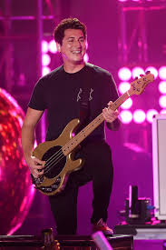
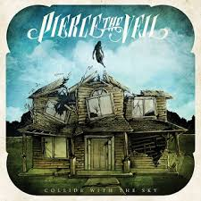

Santiago Castillo, Codigo:235789, Carrera:Analisis de sistema. Electiva II
PIERCE THE VEIL
Es una Banda Estadounidense enfocada en generos como el Post-Hardcore, Pop Punk y Rock Alternativo. Tuvo sus inicios en 1998 bajo el nombre de Early Times y no fue hasta el 2004 que pasaron
por un cambio de nombre a "Before Today", para asi finalmente en el 2006 llamarse como se le conoce actualmente como Pierce The Veil (PTV). Pierce The Veil a sido mi banda favorita desde mitad de 2023 y aprovechando queria algo minimo de la banda:3
INTEGRANTES ACTUALES:
Vic Fuentes:
Vocalista, Guitarrista y Creador de la Banda junto a su Hermano Mike Fuentes.

Jaime Preciado:
Bajista de la banda

Tony Perry
Guitarrista de la banda

Loniel Robinson
Baterista de la banda
ALBUM MÁS CONOCIDO/POPULAR
Collide With The Sky es el Tercer Album de la banda, junto a la colaboracion con varios cantantes entre ellos el mas sonado 'Kellin Quinn', vocalista
de la popular banda Sleeping With Sirens. Pierce The Veil lanzaria este album a mediados de 2012, teniendo una mezcla de sonidos Post-Hardcore con una melancolia y unas letras enganchantes y exquisitas las cuales la banda siempre a sido capaz de transmitir.

Canciones Favoritas de la banda
A pesar de que no coloque el resto de albums. como fan que soy me veo en la necesidad de colocar 3(lastimosamente porque si no termino poniendo toda la discografia XD), Canciones que a dia de hoy son mi top 3 de la Banda
- Million Dollar Houses(The Painter)
- Emergency Contact
- Fast Times at Clairemont High
YA ESO ES TODO GRACIAS POR SU ATENCION Y ESCUCHEN PIERCE THE VEIL QUE ES BUENISIMA LA BANDA SE LOS JURO TIENE UNOS TEMAS INCREBILES (te pueden hacer hasta recordar traumitas pipipi)